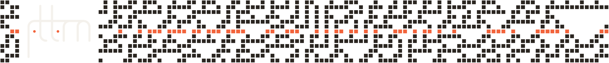
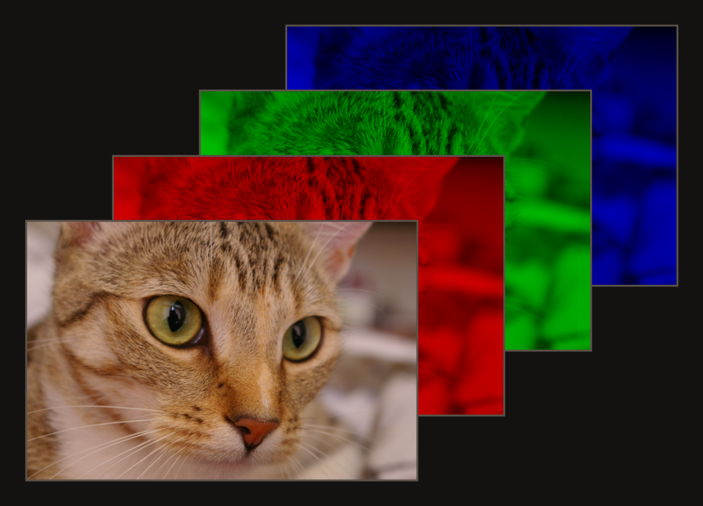
MADS-ML
Machine Learning
Tensors and
the cache
Reusing a model somebody else trained, what the numbers it hands you are, and how a small network learns on top of them.
Lesson 1
Hogeschool Utrecht
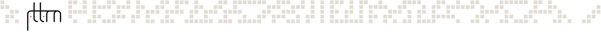
Agenda
eight questions
Eight questions for today
01
Where does deep learning fit?
After Copernicus, Darwin and Freud: Turing. And three ways to learn.
02
Why use a model somebody else trained?
Its space is already ordered. Your labels only have to be read off.
03
What does embedding once save?
Embed once, train many heads. A search multiplies only the cheap part.
04
Which encoder?
It depends on what it was trained on, and on your task. Measure it.
05
What is a tensor?
A rank and a shape. What the axes mean is yours to track.
06
Why a nonlinearity?
Without one, five layers are one layer.
07
How does a network learn?
Stack a batch, score it with a loss, step the weights downhill.
08
How do you search architectures?
Baseline first. Then read the search one axis at a time.
Agenda
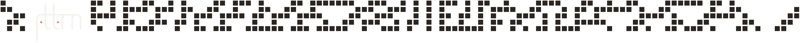
▲ question 01
where does deep learning fit?
Machines that learn are the latest in a line of discoveries that moved humans off the centre. They learn in three ways.
1 · The wounds
Copernicus, Darwin, Freud: each took away a privilege. Schrödinger and Turing took two more.
2 · Three kinds
Supervised, unsupervised, reinforcement. What your data gives you decides which one you are doing.
3 · A loop
Reinforcement learning is a loop: act, check, repeat until a stop condition. Agents work the same way.
■ 1 — where does deep learning fit?
narcissistic wounds
Five narcissistic wounds
1
Copernicus
The earth is not the centre of the universe.
2
Darwin
Humans are a product of evolution.
3
Freud
We are driven by an unconscious.
4
Schrödinger
Our everyday logic falls short of quantum mechanics.
5
Turing
Humans are not the peak of intelligence.
1 / where does deep learning fit?
■ 1 — where does deep learning fit?
three kinds of learning
What your data gives you decides the kind of learning
supervised · x and y
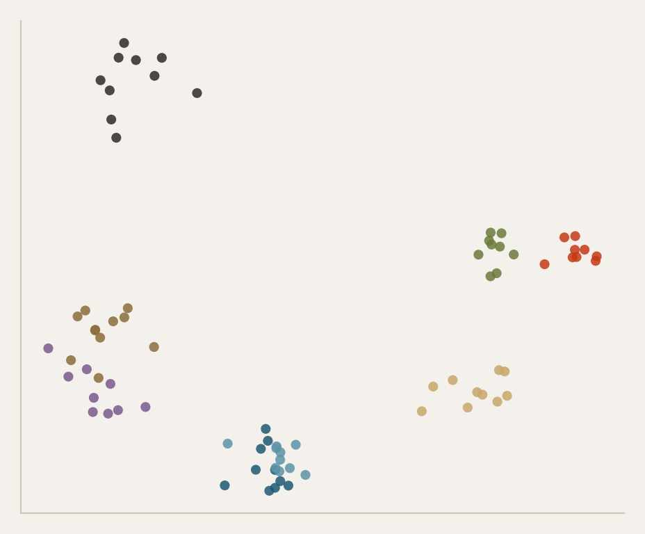
Every example comes with the answer. Learn the map from x to y: a class (classification) or a number (regression).
unsupervised · only x
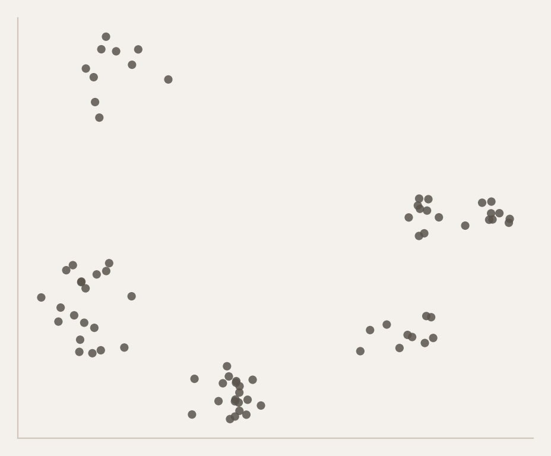
The same points without answers. Find the structure in x itself: groups, directions, what is normal and what is not.
reinforcement · a score
No answers, only a score after you act. Act, get scored, change, act again: a loop.
1 / where does deep learning fit?
■ 1 — where does deep learning fit?
loop engineering
A loop runs until a check says stop
Reinforcement learning: an agent acts, the world answers with a reward, the agent updates and acts again.
Loop engineering: design what starts the loop, what checks the work, and when it stops. The Claude Code team defines a loop as “an agent repeating cycles of work until a stop condition is met”.
| started by | stops when |
|---|---|
| your prompt | the agent judges it done |
| a goal | a checker confirms the goal |
| a clock | you cancel it |
| an event | each task's goal is met |
The check plays the part of the reward. A loop can only get as good as what it can check.
1 / where does deep learning fit?
● 01 — where does deep learning fit?
Machines that learn are the fifth wound. They learn from answers, from structure, or from a score.
Supervised: x with y. Unsupervised: only x. Reinforcement: no y, only a score after acting.
Write down which one you have before you choose a method.
A loop needs a trigger, a check and a stop condition. The check decides how good it can get.
▲ question 02
why use a model somebody else trained?
A model trained on millions of photos already puts similar photos close together. Your labels only have to be read off.
1 · Encoder
A network that turns a photo or a sentence into a few hundred numbers. Somebody else trained it; you keep it frozen.
2 · An ordered space
Near means similar, even for classes the encoder never saw. A nearest neighbour already classifies.
3 · Transfer
Use what it learned for your own task, and train only a small head on top.
■ 2 — why use a model somebody else trained?
oxford flowers, 102 species
The encoder runs once; the head trains on what it stored
cache
VectorCache.from_hub("pttrn-io/oxford-flowers-dinov2-small", split="train")
photos
5,000 photos of 102 kinds of flower
→
encoder · once
DINOv2-small: 22 million weights, trained by Meta on 142 million photos, without labels. Frozen.
→
cache
384 numbers per photo, stored and published on the hub
→
head · yours
384 × 102 weights, trained on a laptop, as often as you like
Encoder: photo in, 384 numbers out. It never saw these labels; it learned what makes photos look alike.
Cache: a frozen encoder gives the same vector for the same photo every time. So compute it once and store it.
Head: the small network you train. Transfer learning is training only this part.
2 / why use a model somebody else trained?
■ 2 — why use a model somebody else trained?
eight of the 102 species
An ordered space, before anything is trained
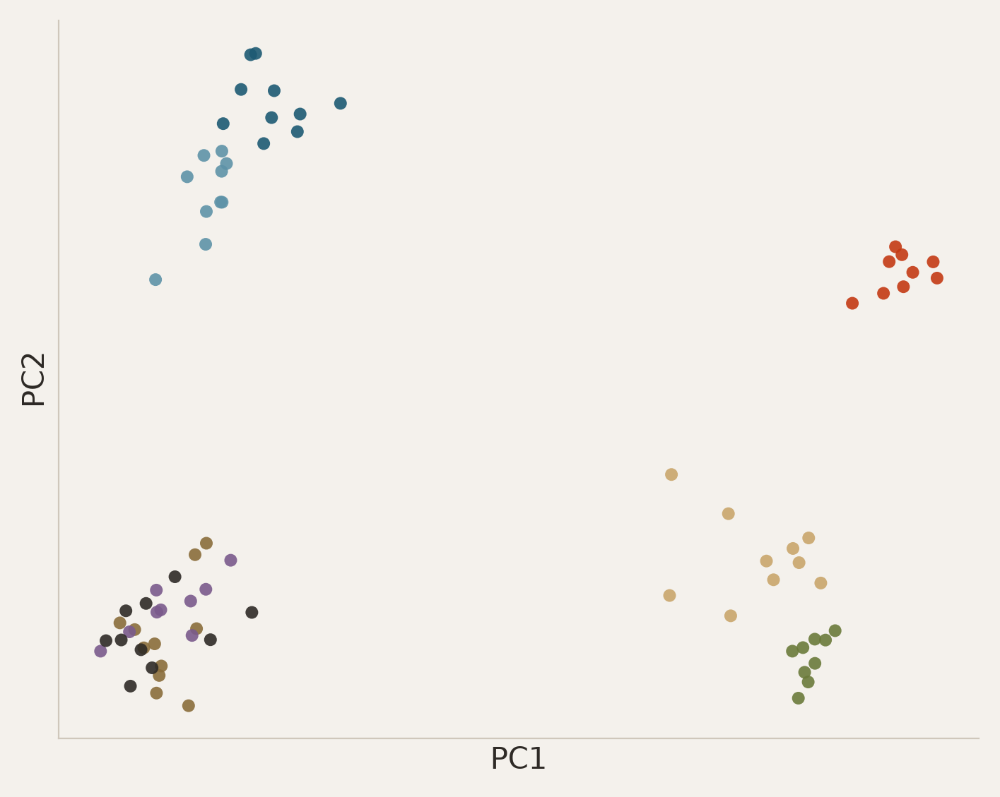
78 test photos of eight species, the encoder’s 384 numbers projected onto two axes with PCA, one colour per species.
Nothing was trained on these labels, and still photos of one species sit together.
The encoder was trained to recognise views of the same photo, not to name flowers. The order is a side effect of learning to see.
The projection does not make the groups. It only shows two of the 384 directions in which the encoder already sorted them.
2 / why use a model somebody else trained?
■ 2 — why use a model somebody else trained?
1,000 test photos × 4,000 training photos
Copy the label of the most similar photo: 99.1%
all cosines at once
(normalize(Xte) @ normalize(Xtr).T).argmax(dim=1)
| flowers, 102 species | trains | accuracy |
|---|---|---|
| guess | nothing | 1.0% |
| nearest neighbour on the cached vectors | nothing | 99.1% |
| a small trained head on the same vectors | a head | 99.3% |
Nearest neighbour: for every test photo, find the training photo with the highest cosine similarity, and copy its label.
No loss, no optimizer, no weights. Only distances, in a space somebody else ordered.
The trained head adds two tenths of a point. The representation does the work.
2 / why use a model somebody else trained?
■ 2 — why use a model somebody else trained?
flowers, satellites, textures
The encoder was never trained for your labels
DINOv2 was trained to give two views of the same photo similar vectors. Nobody told it about flowers, fields or fabrics. The order in its space is a by-product, and you can use it for a purpose it was never trained for.
| dataset · dinov2-small | classes | nearest neighbour | trained head |
|---|---|---|---|
| Oxford Flowers | 102 | 99.1% | 99.3% |
| EuroSAT, satellite tiles | 10 | — | 95.0% |
| DTD, textures | 47 | 77.0% | 80.3% |
Flowers is solved. EuroSAT is good, not solved. Textures leave twenty points of headroom: that is where the search in question eight runs.
2 / why use a model somebody else trained?
● 02 — why use a model somebody else trained?
Somebody else paid to order the space. You read your labels off it.
A frozen encoder turns a photo into a vector. Similar photos get nearby vectors, also for classes it never saw.
Nearest neighbour on flowers: 99.1% with nothing trained. The trained head: 99.3%.
Compute the no-training baseline first: it tells you how much is left for a head to do.
▲ question 03
what does embedding once save?
The encoder is the expensive part, and its output never changes. Pay for it once, then train as many heads as you like.
1 · Embed once
Running a frozen encoder twice on the same photo gives the same vector twice. Store it.
2 · Many heads
On a cache a head trains in a fraction of a second. Try a hundred.
3 · Search multiplies
A hyperparameter search repeats head training, not embedding. Keep the encoder out of the loop.
■ 3 — what does embedding once save?
eurosat, 8,000 tiles, measured
A search of 100 heads: 165 minutes or two
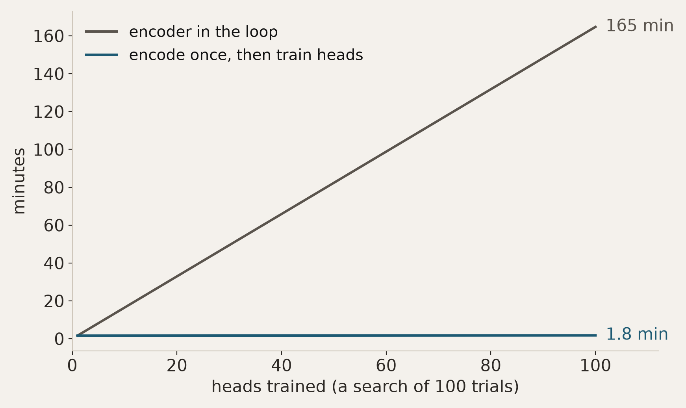
| measured | seconds |
|---|---|
| encode 8,000 tiles, dinov2-small, fast laptop CPU (81 per s) | 99 |
| train one head: 10 epochs over 6,000 vectors | 0.08 |
Encoder in the loop: every trial encodes again. 100 trials, 165 minutes, nearly all of it recomputing the same vectors.
Encode once: 99 seconds, then 100 heads add 8 seconds.
On an older laptop the encoder runs at 10–30 photos per second. The gap only grows.
3 / what does embedding once save?
■ 3 — what does embedding once save?
counting multiplications
A search multiplies the head, never the encoder
E
+
N
×
H
E · encode, once
One photo through DINOv2-small: 22 million weights × 257 patches ≈ 5.7 billion multiplications.
N · experiments
Seeds, learning rates, widths, encoders to compare: a search of 24 trials is N = 24, five seeds each is 120.
H · one head
One photo through a Linear head for EuroSAT: 384 × 10 = 3,840 multiplications. A million times less.
This holds while the encoder is frozen. Finetune it, and every epoch runs the encoder forward and backward: then E is inside the loop and you need the GPU after all.
3 / what does embedding once save?
● 03 — what does embedding once save?
Embed once, train many heads.
Cost is E + N × H. The encoder is a million times the head; the cache pays it once.
100 trials: 165 minutes with the encoder in the loop, under two with the cache.
The condition: the encoder stays frozen. Finetuning puts it back in the loop.
▲ question 04
which encoder?
Different encoders give different vectors. Which one wins depends on what it was trained on, and on your task.
1 · Training data
An encoder keeps what helped on its own training set and objective, and drops the rest.
2 · Your task
The same three encoders are 2 points apart on satellite tiles and 14 apart on textures.
3 · Width is not quality
1,280 numbers per photo can lose to 384. Measure, with the same head.
■ 4 — which encoder?
same rows, same head, three encoders
The encoder moves the number by up to 14 points
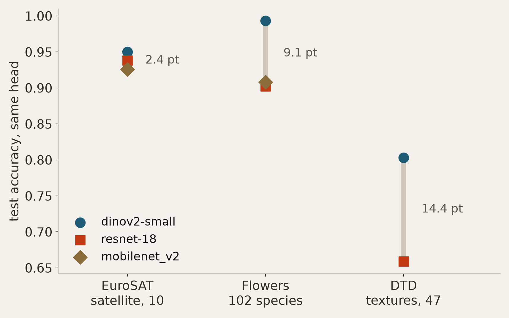
| encoder | trained on | numbers |
|---|---|---|
| dinov2-small | 142 M photos, no labels | 384 |
| resnet-18 | ImageNet, 1,000 objects | 512 |
| mobilenet_v2 | ImageNet, 1,000 objects | 1,280 |
Satellite tiles sit close to what all three learned: 2.4 points apart. Textures do not: 14.4.
mobilenet has 1,280 numbers per photo and loses to dinov2’s 384 on flowers by 8.5 points. Width is not quality.
An axis that is flat on one dataset can be steep on the next. Look before you search on it.
4 / which encoder?
● 04 — which encoder?
Pick the encoder by measuring it on your task, with the same head.
What an encoder keeps follows from its training data and its objective.
The spread depends on the task: 2.4 points on satellite tiles, 14.4 on textures.
More numbers per item is not better. 1,280 lost to 384.
▲ question 05
what is a tensor?
A tensor is a rank and a shape. What its axes mean is up to you, and torch cannot check it.
1 · Formal
Rank: how many axes. Shape: how long each one is. That is all torch knows.
2 · Semantic
What each axis stands for: items, chunks, channels, pixels, time. That lives in your head and your names.
3 · The ladder
(D) one item, (C, D) one chunked item, (B, D) a batch, (B, C, D) a batch of chunked items.
■ 5 — what is a tensor?
one sentence, all-MiniLM-L6-v2
A sentence becomes a vector: rank 1, shape (384,)
encode
model.encode(["The cat sleeps on the warm windowsill."])[0].shape # (384,)
“The cat sleeps on the warm windowsill.”
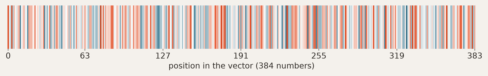
The numbers: 0.107, −0.011, −0.034, 0.145, −0.040, and 379 more. Petrol below zero, vermilion above.
No single number means “cat”. The meaning is in the direction of the whole vector, compared with other vectors.
A photo through DINOv2 gives the same kind of object: one item, one vector, (D). From here on, text and images take the same road.
5 / what is a tensor?
■ 5 — what is a tensor?
rank 0 to rank 5
Rank and shape are formal; meaning is yours
| rank | shape | one reading | another reading, same shape |
|---|---|---|---|
| 0 | () | the loss of one batch | an accuracy |
| 1 | (384,) | one sentence | one photo |
| 2 | (5, 384) | five sentences: (B, D) | one document in five chunks: (C, D) |
| 3 | (3, 300, 451) | one colour photo: (C, H, W) | three documents, 300 chunks, 451 numbers each |
| 4 | (6, 3, 64, 64) | six photos: (B, C, H, W) | six 3-sensor recordings on a 64 × 64 grid |
| 5 | (8, 16, 3, 112, 112) | eight video clips: (B, T, C, H, W) | eight CT scans of 16 slices, 3 contrasts each |
Going up one rank is almost always “a batch of the rank below”. Which reading you hold, the tensor does not record.
5 / what is a tensor?
■ 5 — what is a tensor?
the ladder
Four rungs, and the operation that moves you between them

Columns: a whole item, or an item cut into C chunks.
Rows: one item, or a batch of B.
Stack moves down a row. Chunks of different length need padding first.
Aggregate over C, a mean for instance, takes you back to (B, D), where a head can work.
Images in this lesson stay on the left: (D) → (B, D) → (B, K).
5 / what is a tensor?
■ 5 — what is a tensor?
stack five documents, or split one
Same shape, (5, 384). Different meaning.
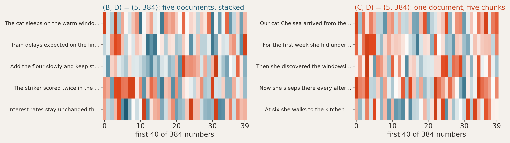
Batch: five documents, stacked. Each row is an item of its own; a head gives each its own prediction.
Chunks: one document, split in five. The rows belong together: their mean cosine is 0.29, against 0.03 for the batch.
torch sees two (5, 384) tensors and treats them the same. Mix them up and nothing crashes.
5 / what is a tensor?
■ 5 — what is a tensor?
the trap
nn.Linear never tells you which rung you are on
head = nn.Linear(384, 10) # acts on the LAST axis only head(torch.rand(32, 384)).shape # (32, 10): one prediction per item head(torch.rand(32, 7, 384)).shape # (32, 7, 10): one per chunk, no error
# write the meaning down, and have it checked @jaxtyped(typechecker=beartype) def classify(x: Float[Tensor, "batch dim"]) -> Float[Tensor, "batch classes"]: return head(x) classify(torch.rand(32, 7, 384)) # raises: expected 2 axes, got 3
A Linear layer accepts any leading shape. The second call trains, the loss goes down, and the answer is about chunks, not documents.
A type annotation names the axes. The check turns a mistake in meaning into a mistake in shape, the only kind a computer can catch.
5 / what is a tensor?
■ 5 — what is a tensor?
chelsea the cat, 300 × 451 pixels
A photo is three planes: (C, H, W)
channels first
torch.from_numpy(img).permute(2, 0, 1).shape # (3, 300, 451)
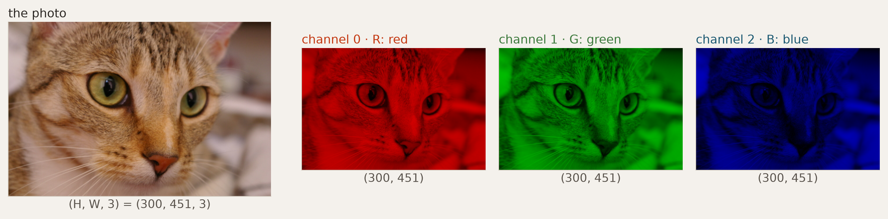
One pixel is three numbers from 0 to 255. Row 150, column 225, in the fur: red 190, green 150, blue 124.
One channel is a grid of 300 × 451 numbers. The fur is light in red and dark in blue: that is why it looks orange.
A file stores (H, W, 3); torch layers want channels first, (3, H, W). One permute, same numbers.
5 / what is a tensor?
■ 5 — what is a tensor?
an axis of length 1
An axis of length 1 is free
same numbers, one more index
gray.unsqueeze(0).shape # (1, 300, 451)
![Top row: the cat in grey as a flat grid labelled (H, W); the same grey cat as a stack of one card, with a vermilion bracket of length 1 along the depth, labelled (1, H, W); the colour cat as a stack of three cards, red, green and blue, with a bracket of length 3. Bottom row: a grid of four chunk rows labelled (C, D); the same grid as one card with a vermilion bracket B = 1, labelled (1, C, D); four rows in four colours labelled (B, D); the same four rows as four separate cards of one row each, with a vermilion mark C = 1 and a bracket B = 4, labelled (B, 1, D)](img/lesson1/unit_axis.png)
A grey photo is (H, W), or one plane: (1, H, W). Pixel [150, 225] is also [0, 150, 225]. The new index can only be 0.
unsqueeze(dim) adds the axis, squeeze(dim) takes it away. No number moves; torch does not even copy.
One document (C, D) is a batch of one, (1, C, D). Four documents (B, D) are four of one chunk each, (B, 1, D).
5 / what is a tensor?
■ 5 — what is a tensor?
six eurosat tiles
A batch of photos is 4D: (B, C, H, W)
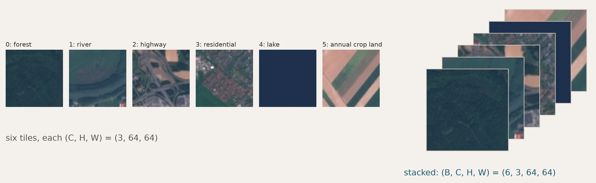
One tile is (3, 64, 64): the cat’s three planes, at satellite resolution.
Six tiles stacked are (6, 3, 64, 64). One rank up, and again it means “a batch of the rank below”.
The encoder takes (B, 3, 224, 224) and returns (B, 384). That step is the cache, seen from the shapes.
5 / what is a tensor?
■ 5 — what is a tensor?
a formal question
Can a CNN run on a time series? Formally, yes
x = torch.rand(32, 200, 3) # (B, S, D): 32 series, 200 steps, 3 sensors nn.Conv1d(3, 16, kernel_size=5)(x.permute(0, 2, 1)).shape # (32, 16, 196) Conv1d wants (B, C, L): sensors as channels nn.Conv2d(1, 16, kernel_size=3)(x.unsqueeze(1)).shape # (32, 16, 198, 1) Conv2d wants (B, C, H, W): a one-channel "image"
“A CNN is an image model” is a habit, not a rule. The rule is only the rank, channels second.
Whether it makes sense is the semantic question: does the pattern you convolve along mean the same wherever it occurs? Along time, often. Across sensors, rarely.
5 / what is a tensor?
● 05 — what is a tensor?
torch sees a shape. You have to know what it means.
Rank and shape are formal. What the axes stand for, items, chunks, channels, time, is semantic.
(D) → (C, D) → (B, D) → (B, C, D): stack, pad, aggregate. Batch of five and one in five chunks have the same shape.
Write the meaning down: in names, and in annotations that are checked.
▲ question 06
why a nonlinearity?
Stack linear layers and you get one linear layer. A nonlinearity between them is what makes depth worth anything.
1 · Collapse
W₅W₄W₃W₂W₁ is one matrix. Five layers without activation compute what one layer computes.
2 · Bend
A layer is σ(Wx + b). The σ bends the line, and bent lines add up to curves.
3 · Any curve
With enough units, one hidden layer can come as close as you like to any continuous function.
■ 6 — why a nonlinearity?
five 12 × 12 layers
Five linear layers are one matrix
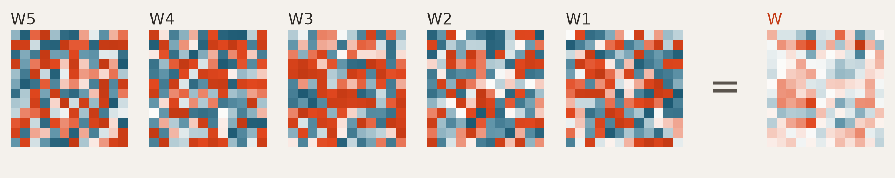
The stack: x → W₁x → W₂W₁x → … → W₅W₄W₃W₂W₁x. Five layers, 720 weights.
The product of five matrices is one matrix W, 144 weights. Same output for every x, to within 2 × 10⁻⁸.
Biases change nothing: W₂(W₁x + b₁) + b₂ = (W₂W₁)x + (W₂b₁ + b₂). Without a nonlinearity, depth buys nothing.
6 / why a nonlinearity?
■ 6 — why a nonlinearity?
y = sin(3x), 200 noisy points
The same three layers, with and without GELU
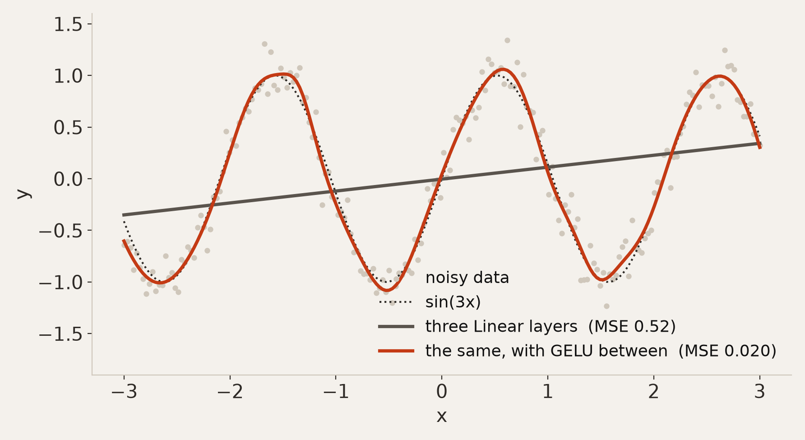
Three Linear layers of width 64, trained for 2,000 steps: the best straight line through a sine. MSE 0.52.
The same three with a GELU after the first two: MSE 0.020, about the noise in the data.
No amount of training fixes the straight line. It is not a training problem, it is what the model can express.
6 / why a nonlinearity?
■ 6 — why a nonlinearity?
universal approximation
Bend a line in enough places and you can draw any curve
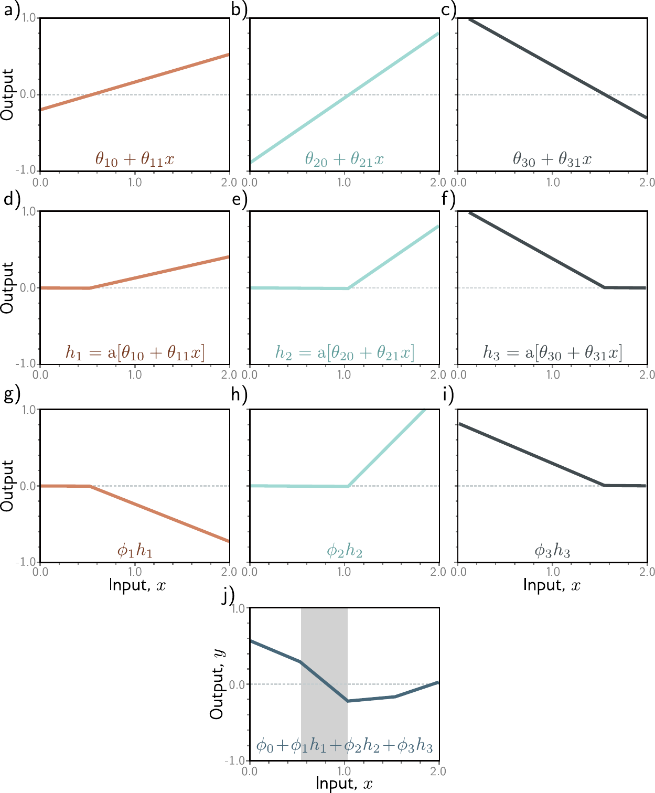
a–c three linear functions of x. d–f each clipped by a ReLU. g–i each weighted. j summed: a line with three bends.
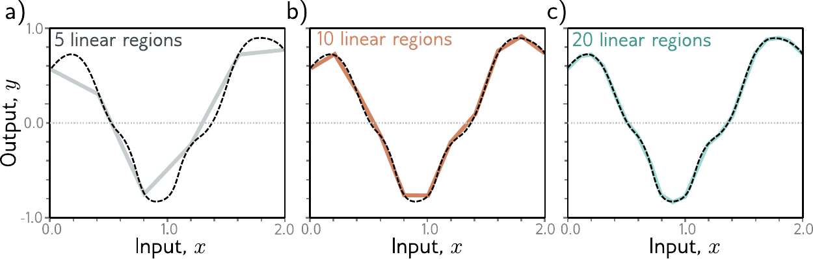
One hidden unit, one bend. More units, more regions, and the fit gets as close as you want. The universal approximation theorem: for any continuous function there is a shallow network that approximates it to any precision.
Figures 3.3 (p. 28) and 3.5 (p. 30) from Prince, Understanding Deep Learning, MIT Press, CC BY-NC-ND. udlbook.github.io/udlbook
6 / why a nonlinearity?
■ 6 — why a nonlinearity?
five activation functions
Which σ matters less than having one, but read the slopes
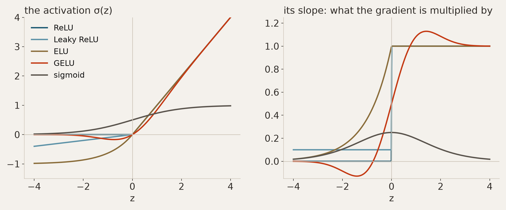
Sigmoid flattens on both sides: slope near zero, so the gradient fades through layers. The old reason deep nets would not train.
ReLU has slope 1 for z > 0. Its weakness: a unit stuck below zero has slope 0 and never recovers, a dead ReLU.
Leaky ReLU, ELU, GELU keep a little slope below zero. GELU is the default in transformers and in vectormesh’s NeuralNet.
6 / why a nonlinearity?
● 06 — why a nonlinearity?
A layer is σ(Wx + b). Without the σ, depth is a slower way to compute one matrix.
Five linear layers are one; a sine fit stays a straight line, MSE 0.52 against 0.020.
Each unit adds a bend. Enough bends approximate any continuous function: the universal approximation theorem.
Read the slope: sigmoid fades, ReLU can die, GELU is the default.
▲ question 07
how does a network learn?
Training repeats one loop: stack a batch, predict, measure how wrong with a loss, and step the weights downhill.
1 · Batch
A list of items becomes one tensor. For cached vectors that is a torch.stack.
2 · Loss and metric
The loss is smooth, so the optimizer can follow it. The metric is for you, and may jump.
3 · Optimizer
The gradient says which way is downhill for every weight. The optimizer decides how far to step.
■ 7 — how does a network learn?
four eurosat rows
Batching is stacking
collate
X = torch.stack([row["embed"] for row in rows]); y = torch.stack([row["label"] for row in rows])
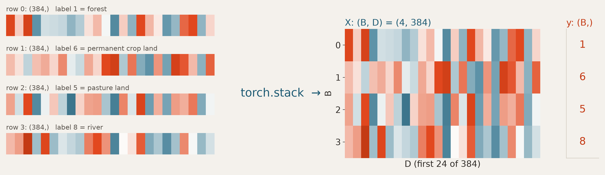
A cache row is a dict: a vector (384,) and a label, one number.
A collate function turns a list of rows into two tensors: X of (B, D) and y of (B,). That is the whole job.
The DataLoader shuffles the training set: gradient descent on a fixed order learns the order.
7 / how does a network learn?
■ 7 — how does a network learn?
loss and metric
The loss is for the optimizer; the metric is for you
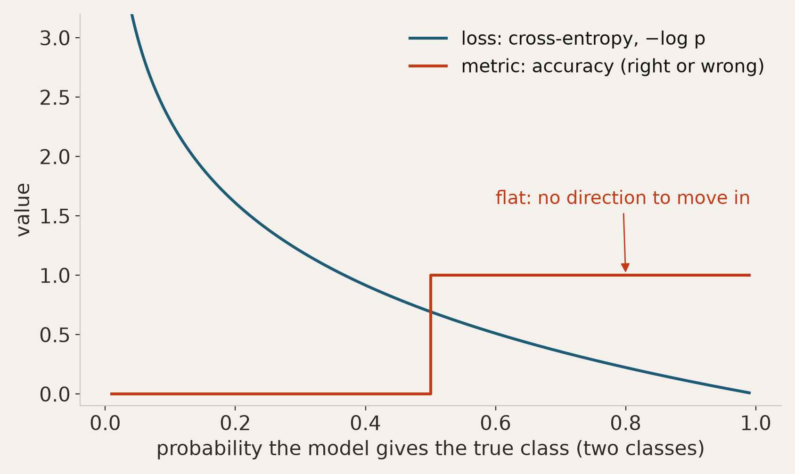
| task | loss | metric |
|---|---|---|
| regression | MSELoss, L1Loss | MAE, MASE |
| one class of K | CrossEntropyLoss | accuracy |
| any subset of K | BCEWithLogitsLoss | F1 |
Accuracy is a step: right or wrong. Its slope is zero almost everywhere, so it cannot tell the optimizer which way to go.
Cross-entropy is smooth and keeps rewarding more confidence in the right class. Both must say what “good” means for your task.
7 / how does a network learn?
■ 7 — how does a network learn?
a valley with two weights
The gradient points downhill; the optimizer decides how far
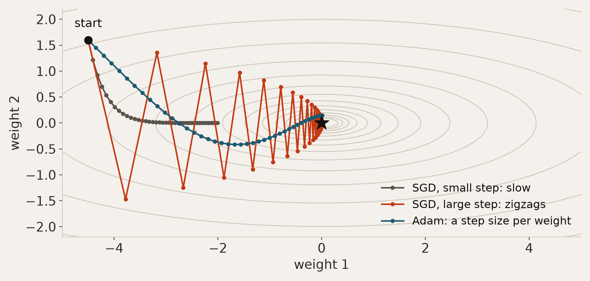
w ← w − η · ∂L/∂w
The gradient ∂L/∂w: for every weight, how fast the loss changes. backward() computes it for all of them at once.
The learning rate η: too small and you creep, too large and you zigzag across the valley.
Adam scales the step per weight by how large its gradients have been. A good default for this course.
7 / how does a network learn?
■ 7 — how does a network learn?
eurosat, a hidden layer, 20 epochs
Five lines per batch, and watch both curves
for X, y in trainloader:
optimizer.zero_grad() # 1 clear: gradients add up
yhat = model(X) # 2 forward: (B, D) to (B, K)
loss = loss_fn(yhat, y) # 3 how wrong, one number
loss.backward() # 4 a gradient for every weight
optimizer.step() # 5 move the weights
Evaluate with model.eval() and torch.no_grad(), then back to model.train().
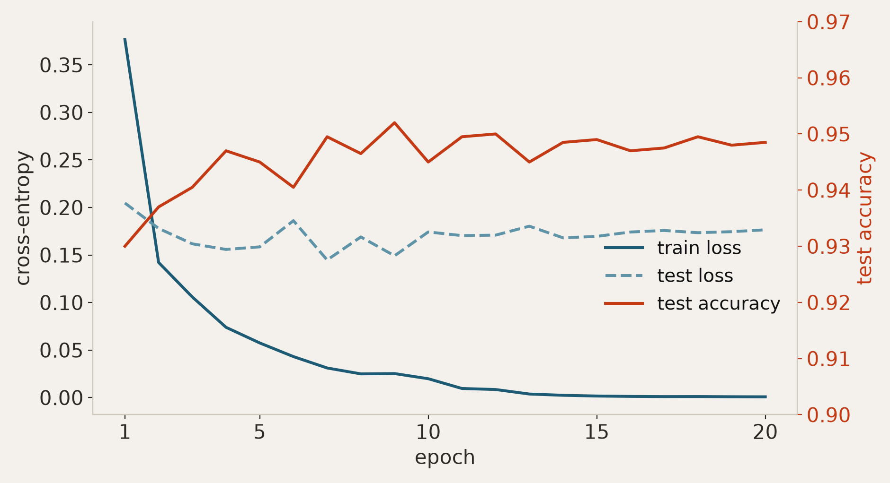
Train loss goes to zero; test loss is lowest at epoch 7, then rises: the model starts to memorise.
7 / how does a network learn?
● 07 — how does a network learn?
Stack, predict, score, step. Repeat until a stop condition.
A batch is a stack of items: (D) to (B, D). A collate function does it.
Train on a smooth loss, report a metric you can explain. Feed both logits.
zero_grad, forward, loss, backward, step. Watch the test loss, not only the training loss.
▲ question 08
how do you search architectures?
A head trains in a second, so measure instead of guessing: a baseline first, then a search, read one axis at a time.
1 · Baseline first
The simplest model, over several seeds, logged in MLflow. Its spread decides what counts as a win.
2 · The search space
Every model you are willing to consider, in one dictionary. Draw each with its tensor shapes.
3 · Read per axis
An axis that does not sort the trials did not matter. A null result is a result.
■ 8 — how do you search architectures?
dtd, dinov2-small, 47 textures
A baseline first, with its noise, logged
mlflow
mlflow.log_metric("baseline_accuracy", BASELINE) · uv run mlflow ui
| dtd · dinov2-small | trained weights | accuracy |
|---|---|---|
| guess | 0 | 2.1% |
| nearest neighbour | 0 | 77.0% |
| Linear head, 5 seeds | 18,095 | 78.9% ± 0.3 |
The floor: nearest neighbour trains nothing. A head has to beat it to be worth training.
The spread: five seeds give ± 0.3 points. A trial within ± 0.6 of 78.9 has not beaten anything.
MLflow: log every run from the first one on, so the comparison is a table, not your memory.
8 / how do you search architectures?
■ 8 — how do you search architectures?
ray.tune, TPE, 24 trials
The search space: every model you are willing to consider
param_space = {
"encoder": tune.choice(["dinov2-large", "dinov2-base",
"dinov2-small", "resnet-18"]),
"n_hidden_layers": tune.choice([0, 1, 2]), # 0 = the baseline
"hidden_dim": tune.choice([128, 512]),
"sigma": tune.uniform(0.0, 0.4), # noise on the input
"lr": tune.loguniform(1e-4, 3e-3),
}
search_alg = HyperOptSearch() # TPE
The encoder is an axis too: one cache per encoder, and question four said it moves the most.
The head: zero, one or two hidden layers, each 128 or 512 wide, GELU between them.
TPE learns which regions scored well and samples there, instead of spending the budget on a grid.
8 / how do you search architectures?
■ 8 — how do you search architectures?
three heads, with their shapes
Draw every architecture with its tensor shapes
baseline
(B, 384)→Linear 384 → 47→(B, 47)one hidden
(B, 384)→Linear 384 → 512→(B, 512)→GELU→Linear 512 → 47→(B, 47)parallel
Two caches of the same photos, joined on source_idx, each a branch of its own. The widths add: 384 + 512 = 896. Write the shape after every step before you run anything.
8 / how do you search architectures?
■ 8 — how do you search architectures?
24 trials on dtd
Only the encoder axis sorts the trials
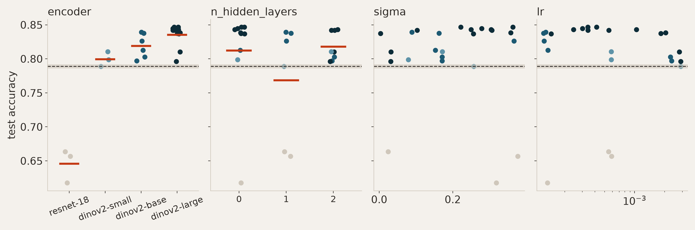
Encoder: resnet-18 at 62–66%, dinov2-small just above the baseline, base and large up to 85%. Nothing done to the head closes that gap.
Hidden layers, sigma, lr: clouds. The low dots in every panel are resnet trials. Inside one encoder the head moves the result by a few points, not twenty.
The leverage was upstream, in the representation. A search can tell you that an axis does not matter.
8 / how do you search architectures?
■ 8 — how do you search architectures?
dtd, dinov2-small, 15 epochs, 5 seeds
The head is worth two points; the encoder is worth ten
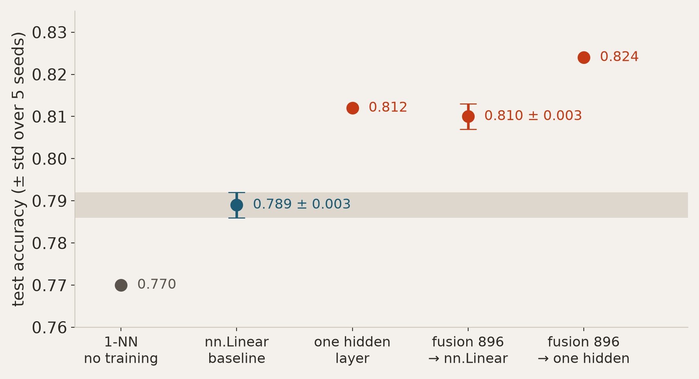
One hidden layer buys 2.3 points over the linear baseline. Fusion with resnet-18 buys 2.1, in 5 seeds of 5. Both are real: far outside the ± 0.3 band.
A second hidden layer loses about 5 points again. Capacity after a frozen encoder helps once, then hurts.
Swapping the encoder moves the number by more than ten. Spend your search there first.
8 / how do you search architectures?
● 08 — how do you search architectures?
Baseline first. Then let the search tell you which axis matters.
Measure the floor and the baseline’s seed spread, and log them in MLflow before the first trial.
Draw every model in the space with its shapes. Read the result one axis at a time.
On a frozen encoder the leverage is upstream: the head is worth about two points, the encoder ten.
Where does deep learning fit?
The fifth wound. It learns from answers, from structure, or from a score in a loop.
Why use a model somebody else trained?
Its space is ordered: nearest neighbour gets 99.1% on flowers.
What does embedding once save?
E + N × H: a search multiplies the head, not the encoder.
Which encoder?
Measure it on your task. 2.4 points apart on satellites, 14.4 on textures.
What is a tensor?
A rank and a shape. The meaning of the axes is yours to track.
Why a nonlinearity?
Without it five layers are one matrix. With it, any curve.
How does a network learn?
Stack, predict, loss, backward, step. Watch the test loss.
How do you search architectures?
Baseline and its noise first; then one axis at a time.
Lesson 1 · Tensors and the cache